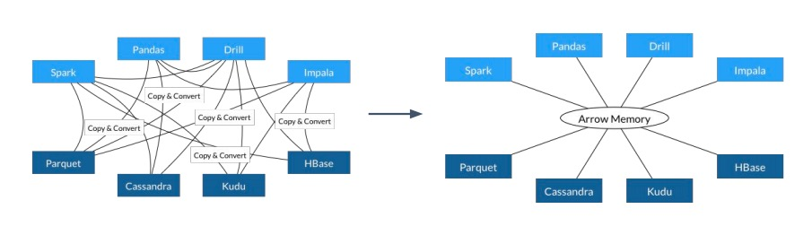
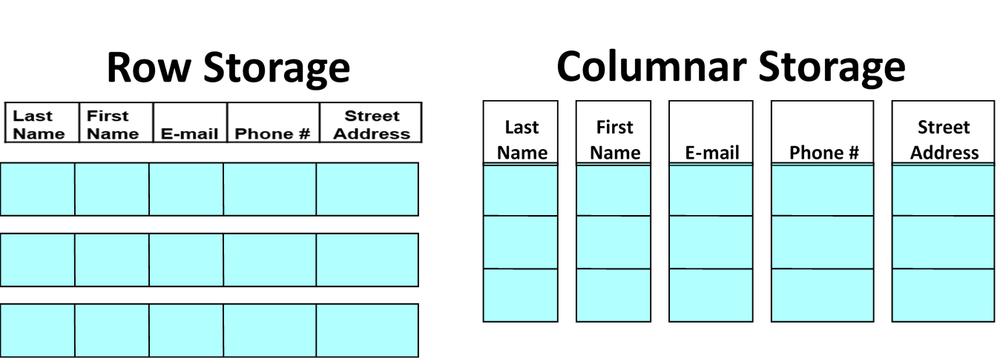
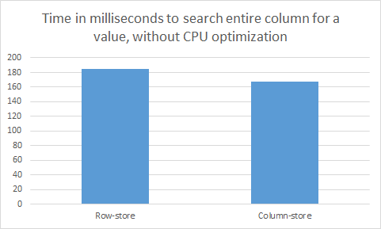
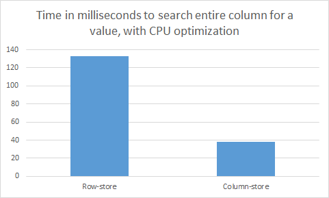

TiDB 为什么要用 Apache Arrow - 一个门外汉的思考
最近在阅读 TiDB 源码 util/chunk package 的过程中，看到了 Apache Arrow 这个项目 (下文简称 Arrow)：
// Chunk stores multiple rows of data in Apache Arrow format.
// See https://arrow.apache.org/docs/format/Columnar.html#physical-memory-layout
// Values are appended in compact format and can be directly accessed without decoding.
// When the chunk is done processing, we can reuse the allocated memory by resetting it.
type Chunk struct { /*...*/ }
心里自然而然会产生疑问：为什么要使用这个项目规定的数据存储格式？于是在阅读完 TiDB 相关源码和单测后，顺便搜寻并浏览一些有趣的资料 (见文末参考部分)，现在将这次调研的收获小结在这篇博客中。
本文简单地介绍一种内存列存数据格式：Apache Arrow，主要涉及的内容包括：
- Arrow 项目的来源
- Arrow 如何表示定长、变长和嵌套数据
- 内存列存数据格式与磁盘列存数据格式的设计取舍
注：Arrow 即可以指内存列存数据格式，也可以指 Apache Arrow 项目整体，因此下文中将用 「Arrow」 表示格式本身，「Arrow 项目」表示整体项目。
项目简介
现存的大数据分析系统基本都基于各自不同的内存数据结构，这就会带来一系列的重复工作：从计算引擎上看，算法必须基于项目特有的数据结构、API 与算法之间出现不必要的耦合；从数据获取上看，数据加载时必须反序列化，而每一种数据源都需要单独实现相应的加载器；从生态系统上看，跨项目、跨语言的合作无形之中被阻隔。能否减少或消除数据在不同系统间序列化、反序列化的成本？能否跨项目复用算法及 IO 工具？能否推动更广义的合作，让数据分析系统的开发者联合起来？在这样的使命驱动下，Arrow 就诞生了。
与其它项目不同，Arrow 项目的草台班子由 5 个 Apache Members、6 个 PMC Chairs 和一些其它项目的 PMC 及 committer 构成，他们直接找到 ASF 董事会，征得同意后直接以顶级 Apache 项目身份启动。想了解项目的详细历史可以阅读项目 Chair，Jacques Nadeau 写的这篇博客。另外，这张 google sheet 记录着项目的取名过程，取名为 Arrow 的原因是："math symbol for vector. and arrows are fast. also alphabetically will show up on top." 可以说考虑得相当全面 😂。
Arrow 的愿景是提供内存数据分析 (in-memory analytics) 的开发平台，让数据在异构大数据系统间移动、处理地更快：

项目主要由 3 部分构成：
- 为分析查询引擎 (analytical query engines)、数据帧 (data frames) 设计的内存列存数据格式
- 用于 IPC/RPC 的二进制协议
- 用于构建数据处理应用的开发平台
整个项目的基石是基于内存的列存数据格式，现在将它的特点罗列如下：
- 标准化 (standardized)，与语言无关 (language-independent)
- 同时支持平铺 (flat) 和层级 (hierarchical) 数据结构
- 硬件感知 (hardware-aware)
基于内存的列存格式
详细、准确的格式定义请阅读官方文档，本节内容参考了官方文档及 Daniel Abadi 的这篇博客。
在实践中，工程师通常会将系统中的数据通过多个二维数据表建模，每张数据表的一行表示一个实体 (entity)，一列表示同一属性。然而，在硬件中存储器通常是一维的，即计算机程序只能线性地、沿同一方向地从内存或硬盘中读取数据，因此存储二维数据表就有两种典型方案：行存和列存。通常前者适用于 OLTP 场景，后者适用于 OLAP 场景，Arrow 是面向数据分析开发的，因此采用后者。

任何一张数据表都可能由不类型的数据列构成。以某张用户表为例，表中可能包含如年龄 (integer)、姓名 (varchar)、出生日期 (date) 等属性。Arrow 将数据表中所有可能的列数据分成两类，定长和变长，并基于定长和变长数据类型构建出更复杂的嵌套数据类型。
Fixed-width data types
定长的数据列格式如下所示：
type FixedColumn struct {
data []byte
length int
nullCount int
nullBitmap []byte // bit 0 is null, 1 is not null
}
除了数据数组 (data) 外，还包含：
- 数组长度 (length)
- null 元素的个数 (nullCount)
- null 位图 (nullBitmap)
以 Int32 数组：[1, null, 2, 4, 8] 为例，它的结构如下：
length: 5, nullCount: 1
nullBitmap:
|Byte 0 (null bitmap) | Bytes 1-63 |
|---------------------|-----------------------|
| 00011101 | 0 (padding) |
data:
|Bytes 0-3 | Bytes 4-7 | Bytes 8-11 | Bytes 12-15 | Bytes 16-19 | Bytes 20-63 |
|------------|-------------|-------------|-------------|-------------|-------------|
| 1 | unspecified | 2 | 4 | 8 | unspecified |
这里有一个值得关注的设计决定，无论数组中的某个元素 (cell) 是否是 null，在定长数据格式中 Arrow 都会让该元素占据规定长度的空间；另一种备选方案就是不给 null 元素分配任何空间。前者可以利用指针代数支持 O(1) 的随机访问，后者在随机访问时需要先利用 nullBitmap 计算出位移。如果是顺序访问，后者需要的内存带宽更小，性能更优，因此这里主要体现的是存储空间与随机访问性能的权衡，Arrow 选择倾向是后者。
从 nullBitmap 的结构可以看出，Arrow 采用 little-endian 存储字节数据。
Variable-width data types
变长的数据列格式如下所示：
type VarColumn struct {
data []byte
offsets []int64
length int
nullCount int
nullBitmap []byte // bit 0 is null, 1 is not null
}
可以看出，比定长列仅多存一个偏移量数组 (offsets)。offsets 的第一个元素固定为 0，最后一个元素为数据的长度，即与 length 相等，那么关于第 i 个变长元素：
pos := column.offsets[i] // 位置
size := column.offsets[i+1] - column.offsets[i] // 大小
另一种备选方案是在 data 中利用特殊的字符分隔不同元素，在个别查询场景下，后者能取得更优的性能。如扫描字符串列中包含某两个连续字母的所有列：利用 Arrow 的格式需要频繁地访问 offsets 来遍历 data，但利用特殊分隔符的解决方案直接遍历一次 data 即可。而在其它场景下，如查询某字符串列中值和 "hello world" 相等的字符串，这时利用 offsets 能过滤掉所有长度不为 11 的列，因此利用 Arrow 的格式能获取更优的性能。
Nested Data
数据处理过程中，一些复杂数据类型如 JSON、struct、union 都很受开发者欢迎，我们可以将这些数据类型归类为嵌套数据类型。Arrow 处理嵌套数据类型的方式很优雅，并未引入定长和变长数据列之外的概念，而是直接利用二者来构建。假设以一所大学的班级 (Class) 信息数据列为例，该列中有以下两条数据：
// 1
Name: Introduction to Database Systems
Instructor: Daniel Abadi
Students: Alice, Bob, Charlie
Year: 2019
// 2
Name: Advanced Topics in Database Systems
Instructor: Daniel Abadi
Students: Andrew, Beatrice
Year: 2020
我们可以将改嵌套数据结构分成 4 列：Name、Instructor、Students 以及 Year，其中 Name 和 Instructor 是变长字符串列，Year 是定长整数列，Students 是字符串数组列 (二维数组)，它们的存储结构分别如下所示：
Name Column:
data: Introduction to Database SystemsAdvanced Topics in Database Systems
offsets: 0, 32, 67
length: 2
nullCount: 0
nullBitmap:
| Byte 0 | Bytes 1-63 |
|----------|------------|
| 00000011 | 0 (padding)|
Instructor Column:
data: Daniel AbadiDaniel Abadi
offsets: 0, 12, 24
length: 2
nullCount: 0
nullBitmap:
| Byte 0 | Bytes 1-63 |
|----------|------------|
| 00000011 | 0 (padding)|
Students Column
data: AliceBobCharlieAndrewBeatrice
students offsets: 0, 5, 8, 15, 21, 29
students length: 5
students nullCount: 0
students nullBitmap:
| Byte 0 | Bytes 1-63 |
|----------|------------|
| 00011111 | 0 (padding)|
nested student list offsets: 0, 3, 5
nested student list length: 2
nested student list nullCount: 0
nested student list nullBitmap:
| Byte 0 | Bytes 1-63 |
|----------|------------|
| 00000011 | 0 (padding)|
Year Column
data: 2019|2019
length: 2
nullCount: 0
nullBitmap:
| Byte 0 | Bytes 1-63 |
|----------|------------|
| 00000011 | 0 (padding)|
这里的 Students 列本身就是嵌套数据结构，而外层的 Class 表包含了 Students 列，可以看出这种巧思能支持无限嵌套，是很值得称赞的设计。
Buffer alignment and padding
Arrow 列存格式的所有实现都需要考虑数据内存地址的对齐 (alignment) 以及填充 (padding)，通常推荐将地址按 8 或 64 字节对齐，若不足 8 或 64 字节的整数倍则按需补全。这主要是为了利用现代 CPU 的 SIMD 指令，将计算向量化。
Memory-oriented columnar format
计算机发展的几十年来，绝大多数数据引擎都采用行存格式，主要原因在于早期的数据应用负载模式基本都逃不出单个实体的增删改查。面对此类负载，如果采用列存格式存储数据，读取一个实体数据就需要在存储器上来回跳跃，找到该实体的不同属性，本质上是在执行随机访问。但随着时间的推移，数据的增多，负载变得更加复杂，数据分析的负载模式逐渐显露，即每次访问一组实体的少数几个属性，然后聚合出分析结果，这时候列存格式的地位便逐渐提高。
在 Hadoop 生态中，Apache Parquet 和 Apache ORC 已经成为最流行的两种文件存储格式，它们核心价值也是围绕着列存数据格式建立，那么我们为什么还需要 Arrow？这里我们可以从两个角度来看待数据存储：
- 存储格式：行存 (row-wise/row-based)、列存 (column-wise/column-based/columnar)
- 主要存储器：面向磁盘 (disk-oriented)、面向内存 (memory-oriented)
尽管三者都采用列存格式，但 Parquet 和 ORC 是面向磁盘设计，而 Arrow 是面向内存设计。为了理解面向磁盘设计与面向内存设计的区别，我们来看 Daniel Abadi 做的一个实验。
Daniel Abadi 的实验
在一台 Amazon EC2 的 t2.medium 实例上，创建一张包含 60,000,000 行数据的表，每行包含 6 个属性，每个属性值都是 int32 类型的数据，因此每行需要 24 字节空间，整张表占用约 1.5GB 空间。我们将这张表分别用行存格式和列存格式保存一份，然后执行一个简单的查询：在第一列中查找与特定值相等的数据，即：
SELECT a FROM t WHERE t.a = 477638700;
不论是行存还是列存版本，CPU 的工作都是获取整数与目标整数进行比较。但在行存版本中执行该查询需要扫描每行，即全部 1.5GB 数据，而在列存版本中执行该查询只需扫描第一列，即 0.25GB 数据，因此后者的执行效率理论上应该是前者的 6 倍。然而，实际的结果如下所示：

列存版本与行存版本的性能竟然相差无几！原因在于实验执行时关闭了所有 CPU 优化 (vectorization/SIMD processing)，使得该查询的瓶颈出现在 CPU 处理上。我们来一起分析一下其中的原因：根据经验，从内存扫描数据到 CPU 中的吞吐能达到 30GB/s，现代 CPU 的处理频率能达到 3GHz，即每秒 30 亿 CPU指令，因此即便处理器可以在一个 CPU 周期执行 32 位整数比较，它的吞吐最多为 12 GB/s，远远小于内存输送数据的吞吐。因此不论是行存还是列存，从内存中输送 0.25GB 还是 1.5GB 数据到 CPU 中，都不会对结果有大的影响。
如果打开 CPU 优化选项，情况就大不相同。对于列存数据，只要这些整数在内存中连续存放，编译器可以将简单的操作向量化，如 32 位整数的比较。通常，向量化后处理器在单条指令中能够同时将 4 个 32 位整数与指定值比较。优化后再执行相同的查询，实验的结果如下图所示：

可以看到与预期相符的 4 倍差异。不过值得注意的是，此时 CPU 仍然是瓶颈。如果内存带宽是瓶颈的话，我们将能够看到列存版本与行存版本的性能差异达到 6 倍。
从以上实验可以看出，针对少量属性的顺序扫描查询的工作负载，列存格式要优于行存格式，这与数据是在磁盘上还是内存中无关，但它们优于行存格式的理由不同。如果以磁盘为主要存储，CPU 的处理速度要远远高于数据从磁盘移动到 CPU 的速度，列存格式的优势在于能通过更适合的压缩算法减少磁盘 IO；如果以内存为主要存储，数据移动速度的影响将变得微不足道，此时列存格式的优势在于它能够更好地利用向量化处理。
这个实验告诉我们：数据存储格式的设计决定在不同瓶颈下的目的不同。最典型的就是压缩，对于 disk-oriented 场景，更高的压缩率几乎总是个好主意，利用计算资源换取空间可以利用更多的 CPU 资源，减轻磁盘 IO 的压力；对于 memory-oriented 场景，压缩只会让 CPU 更加不堪重负。
Apache Parquet/ORC vs. Apache Arrow
现在要对比 Parquet/ORC 与 Arrow 就变得容易一些。因为 Parquet 和 ORC 是为磁盘而设计，支持高压缩率的压缩算法，如 snappy、gzip、zlib 等压缩技术就十分必要。而 Arrow 为内存而设计，对压缩算法几乎没有要求，更倾向于直接存储原生的二进制数据。面向磁盘与面向内存的另一个不同点在于：尽管磁盘和内存的顺序访问效率都要高于随机访问，但在磁盘中，这个差异在 2-3 个数量级，而在内存中通常在 1 个数量级内。因此要均摊一次随机访问的成本，需要在磁盘中连续读取上千条数据，而在内存中仅需要连续读取十条左右的数据。这种差异意味着 内存场景下的 batch 大小 (如 Arrow 的 64KB) 要小于磁盘场景下的 batch 大小。
TiDB 为什么要参考 Arrow
TiDB 本身就是基于内存的计算引擎，那么既然 TiDB 有意向 HTAP 方向发展，AP 场景自然也是它的目标场景。既然 Arrow 的列存格式是这个领域的事实标准，那么拥抱行业标准也就是一个不难做的决定了！
参考
- DBMS Musings: Apache Arrow vs. Parquet and ORC: Do we really need a third Apache project for columnar data representation?
- DBMS Musings: An analysis of the strengths and weaknesses of Apache Arrow
- Dremio blog: The Origin & History of Apache Arrow
- ACM: Apache Arrow and the Future of Data Frames, slides
- Apache Arrow: official docs, committers
- TiDB: A Raft-based HTAP Database
- TiDB 源码阅读系列文章 (十) Chunk 和执行框架简介